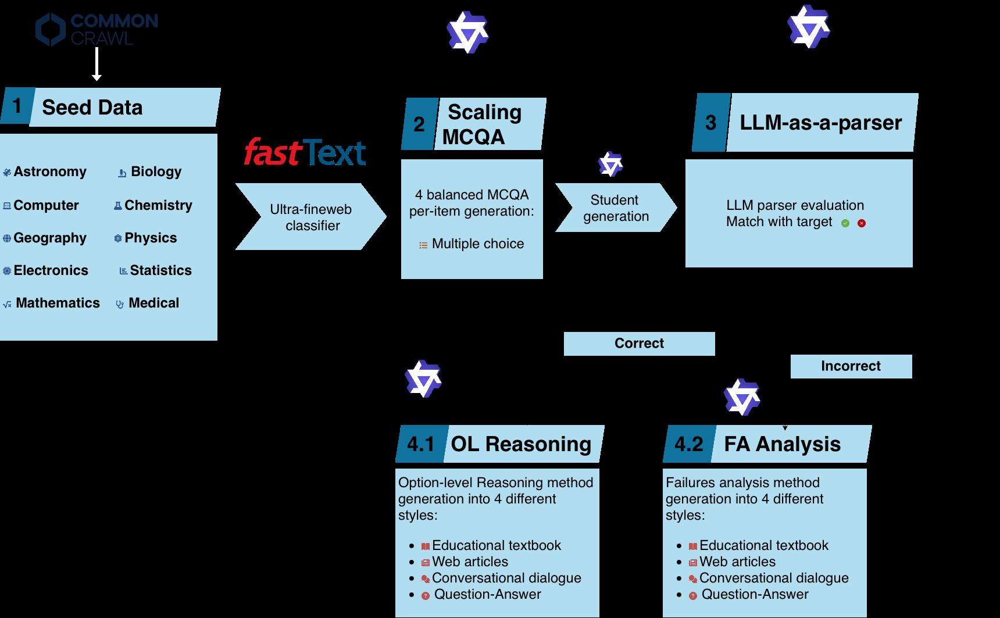
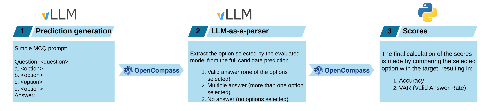

High per-token learning value is the bottleneck for small STEM models, and the open ecosystem has lacked a corpus built for it. QVAC Genesis III contributes 191.43 billion synthetic STEM tokens across 19 domains and difficulty levels, generated by a dual strategy steered by a weak edge-scale student: its failures become corrective explanations, its successes expand into contrastive reasoning over every answer choice. From-scratch 1.7B ablations beat Cosmopedia-v2 and Cosmo-1B throughout.
Edge and on-device models face tight token budgets while frontier labs train ever-larger models on private corpora. Open synthetic STEM data with high per-token value for small models barely exists, the gap this corpus targets.
Targeted teacher distillation uses the weak student as the signal rather than a passive recipient: failures are converted into corrective explanations aimed at the miss, successes into contrastive option-level reasoning covering all answer choices. The generation pipeline overview shows seed passages flowing through quality stages into both paths.
The LLM-as-a-parser protocol extracts final answers from free-form outputs and tracks accuracy alongside answer validity, formalized in the extracted Valid Answer Rate equation: one minus the no-answer and multi-answer rates.
Controlled from-scratch 1.7B runs beat Cosmopedia-v2-trained models and the public Cosmo-1B across ARC, GPQA Diamond and MMLU STEM, peaking at plus 28.57% on ARC-E and 21.35% on ARC-C with valid-answer rates up to 99.45%.


Abstract
High-quality pre-training data is a critical bottleneck for educational and STEM-specific language models targeting edge AI and on-device deployment where token budgets are tightly constrained. While major organizations train ever-larger models on private corpora, the open ecosystem lacks STEM-focused synthetic datasets that deliver high per-token learning value efficiently for small models. To address this gap, we introduce QVAC Genesis III, a 191.43B-token, STEM-focused multi-domain synthetic corpus covering 19 domains across several difficulty levels and different educational styles. QVAC Genesis III is built via a dual generation strategy that performs targeted teacher distillation using a weak edge-scale student model as signal: the student's failures are converted into corrective explanations, while its successes are expanded into contrastive option-level reasoning over all answer choices. We further introduce an LLM-as-a-parser evaluation protocol that extracts final answers from free-form outputs and tracks both accuracy and answer validity. To validate the effectiveness of our QVAC Genesis III data, we conduct controlled from-scratch ablations with 1.7B-parameter models, showing that models trained with QVAC Genesis III consistently outperform both models trained with the open-source synthetic corpus Cosmopedia-v2 and the publicly released Cosmo-1B model across ARC, GPQA Diamond, and MMLU STEM benchmarks, achieving up to +28.57% on ARC-E and +21.35% on ARC-C, while reaching a Valid Answer Rate of up to 99.45%.